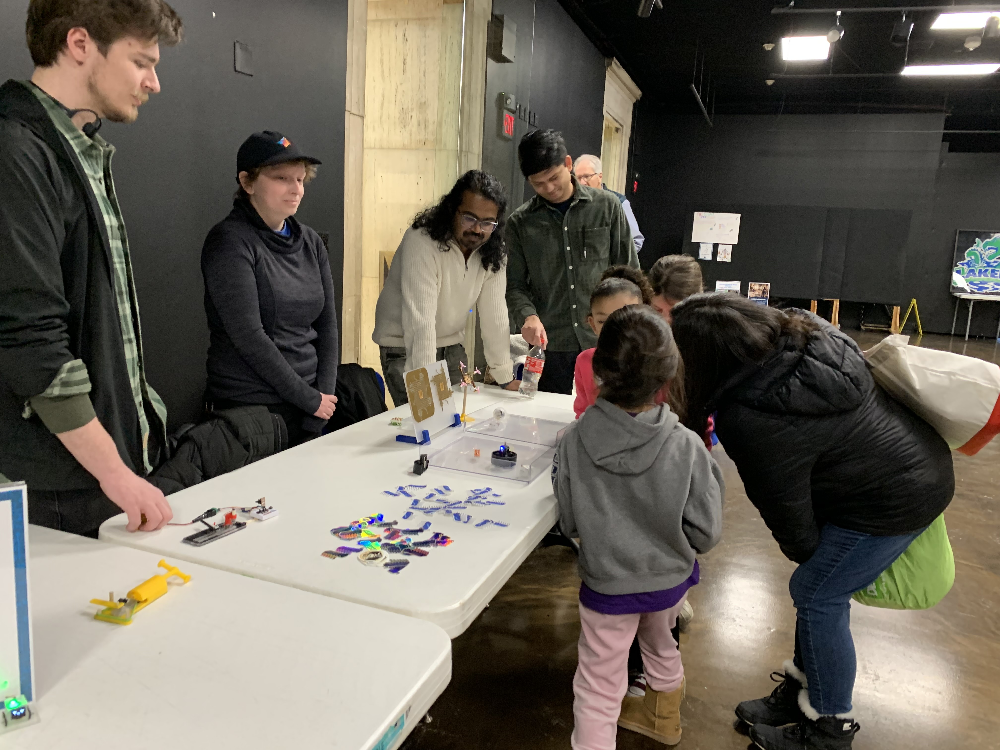
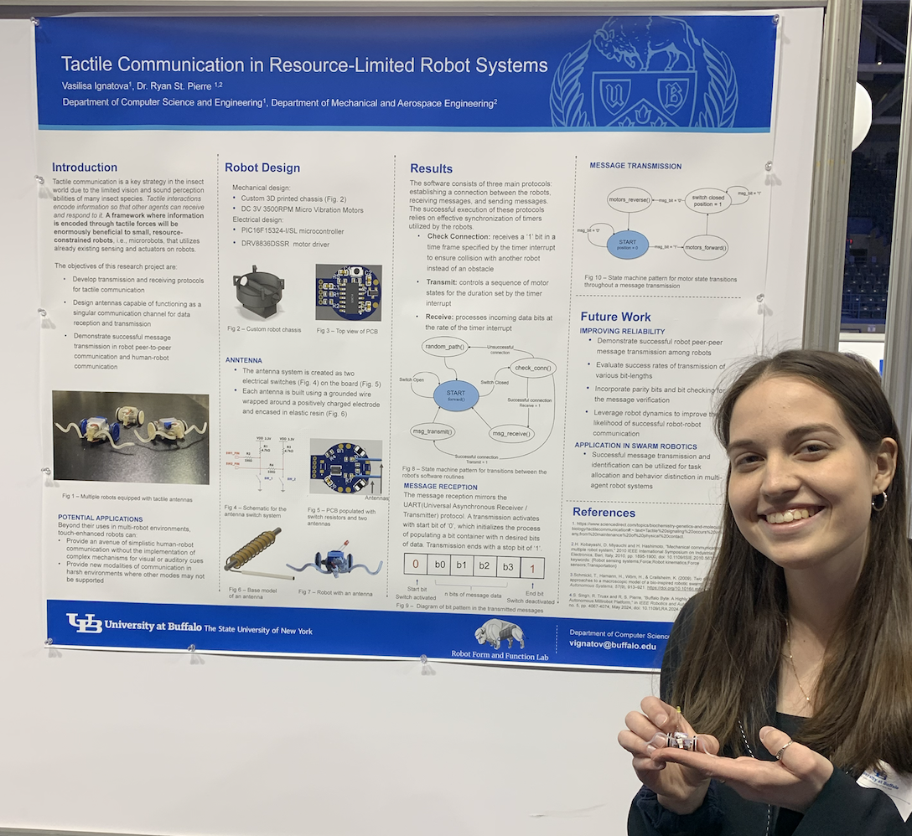
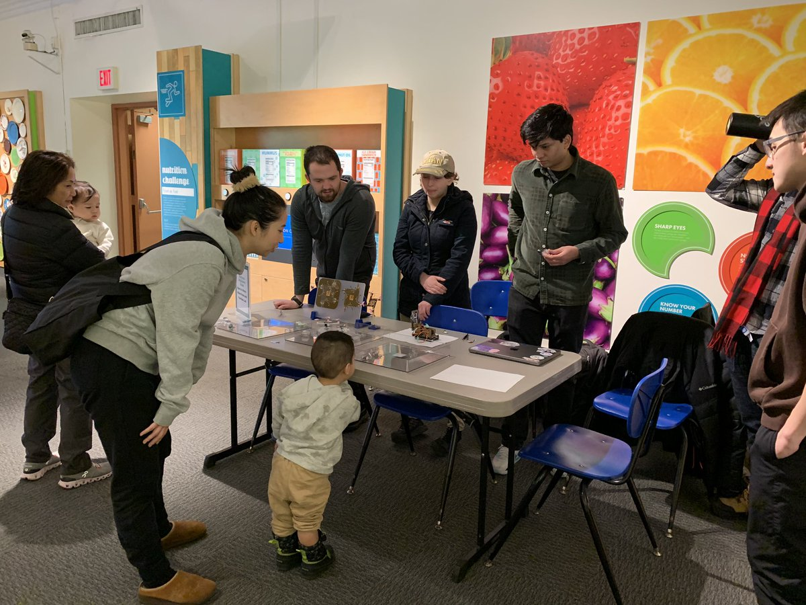
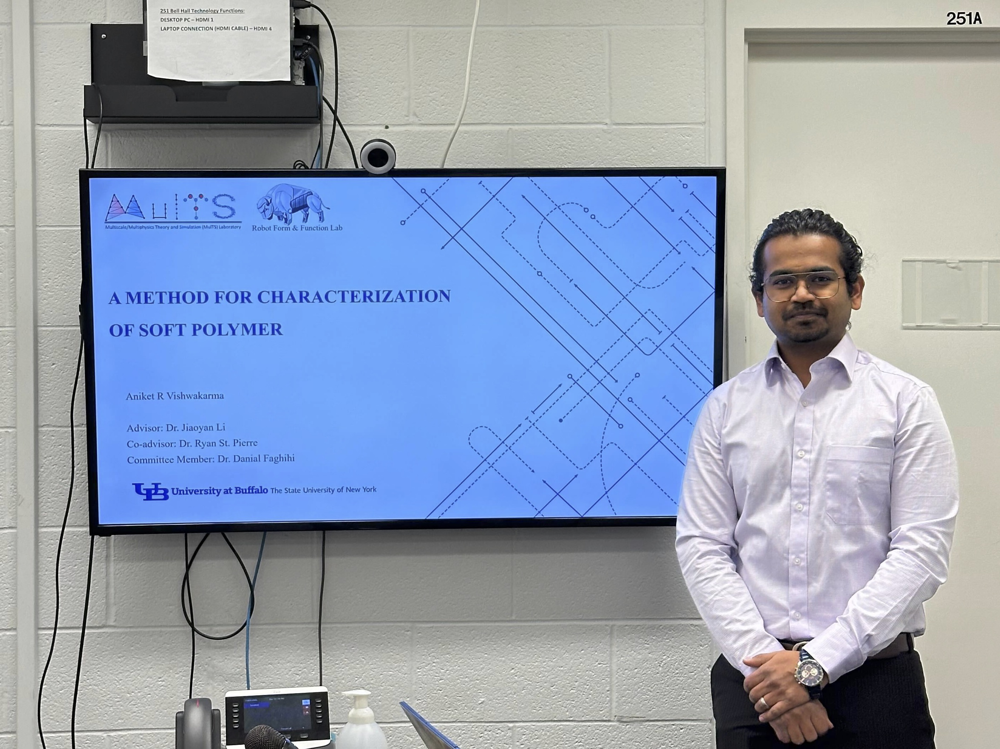
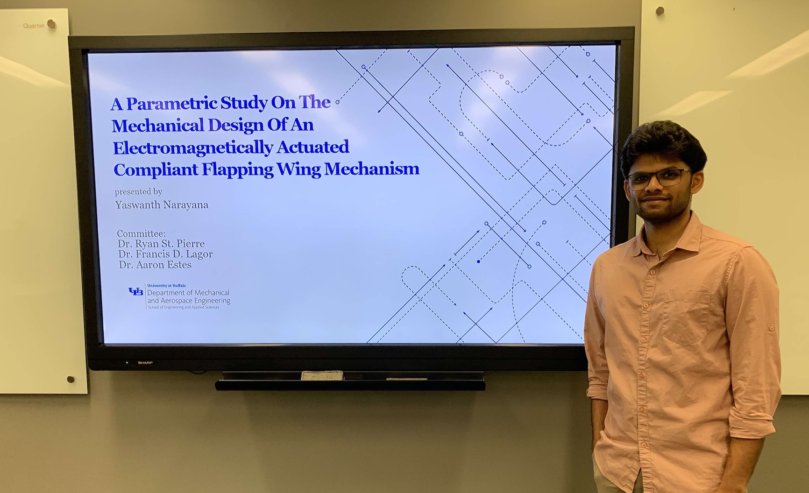

February 2025
Our research program was highlighted on UB Now
 The Robot Form and Function Lab demonstrated some of our tiny robots at the Buffalo Museum of Science for Engineers Week.
Fall 2024
Kyle Pestar won the Gustav and Grete Zimmer Memorial Scholarship Fund to support undergraduate research! Congratulations Kyle!
July 2024
May 2024
 Shashwat Singh won the Best Poster Award at the Unconventional Robotics workshop at ICRA 2024. Shahswat presented his work on a multi-modal, spring-tail inspired microrobot.
Shashwat Singh won the Best Poster Award at the Unconventional Robotics workshop at ICRA 2024. Shahswat presented his work on a multi-modal, spring-tail inspired microrobot.

Vasilisa presented her research on tactile communication in small-scale, resource-constrained robots at the 2024 Celebration of Student Academic Excellence.
Her work aims to enable communication between humans and robots or robots and robots through a sense of touch, allowing for a new methodology of passing information without wireless communication methods like Bluetooth or Wi-Fi.
April 2024
 Audra Smith presented a photograph of her research at the 2024 Art of Research competition at the Buffalo Museum of Science.
Audra Smith presented a photograph of her research at the 2024 Art of Research competition at the Buffalo Museum of Science.
Her photograph is of a 3D printed part, shortly after emerging from the resin bath. It is made from a thick liquid resin, which is solidified (via laser) in layers as it is lifted out of a vat. The image appears upside down; It is, because the part was created with its base at the top in order for the resin to drip off during printing.
The 3D printed part serves as a body for a robot which is inspired by slime molds. Each of these individual cells will be equipped with one vibration motor as its sole method of movement. Changes in the speed of the spin at different times or angles allows the part to move in any direction. They will be programmed to interact with their neighbors, Allowing for these robots to move as one body.
February 2024
 The Robot Form and Function Lab demonstrated some of our tiny robots at the Buffalo Museum of Science for Engineers Week.
December 2023
 Aniket Vishwakarma successfully defended his MS thesis and will be continuing on as a PhD student at the University at Buffalo for the Spring 2024 semester. Congratulations Aniket!
August 2023
 Yaswanth Narayana successfully defended his MS thesis and will be graduating from the Robot Form and Function Lab at the University at Buffalo. Congratulations Yaswanth!
July 2023
Meg Negussie won a best presentation award at the 2023 LS-PAC conference! Congraulations Meg!
Shashwat Singh won the Dean's Graduate Achievement Award in the School of Enginering and Applied Science at the University at Buffalo. This award honors exceptional graduate students who have distinguished themselves through excellence in research and related technical presentations/publications. Congratulations Shashwat!
 Shashwat Singh successfully defended his MS thesis and will be graduating from the Robot Form and Function Lab at the University at Buffalo. Shashwat will be joining Carnegie Mellon University's Robotics Institute for Fall 2023! Congratulations Shashwat!
Shashwat Singh successfully defended his MS thesis and will be graduating from the Robot Form and Function Lab at the University at Buffalo. Shashwat will be joining Carnegie Mellon University's Robotics Institute for Fall 2023! Congratulations Shashwat!
Summer 2023
Nolan Skowronski won the Gustav and Grete Zimmer Memorial Scholarship Fund to support undergraduate research! Congratulations Nolan!
May 2023
MS student Yaghnya Reddy Kuchikulla and undergraduate students Patrick Harrington, John Cemay, and Ryan O'Neal graduated! Congratulations everyone!
July 2022
Our article studying trap-jaw ants was highlighted by the Journal of Experimental Biology. Read the press release here.
Summer 2022
John Cemay won the Gustav and Grete Zimmer Memorial Scholarship Fund to support undergraduate research! Congratulations John!
May 2022
MS students Amin Malek Pour and Leanne Jamieson graduated!
March 2022
Leanne Jamieson won the PhD Incentive Scholarship from the Mechanical and Aerospace Engineering Department at the University at Buffalo! Congratulations Leanne!
January 2021
The Robot Form and Function Lab is starting at the University at Buffalo and looking to recruit students interested in building dynamic robots.